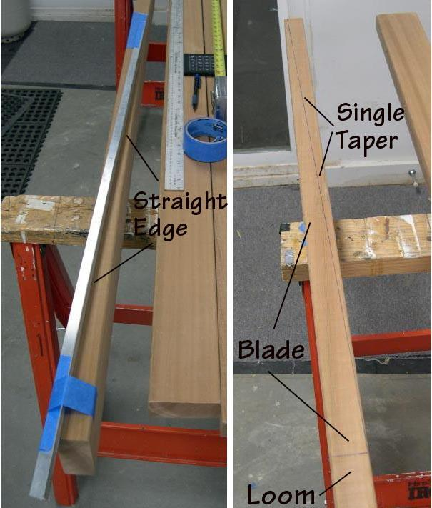

| Take-Apart Paddle Construction | Menu Last Page Next Page |
|
 The first step, as with the GP, is to define the blade taper. As mentioned earlier, and illustrated in the drawings, the modified AP has a single taper. This means less bandsaw cuts, and therefore less work. The single tapered blade results in a flat power face.( See Drawings) I prefer the modifed AP's feel in the water vs the two-side taper of the GP. However, it may not be your preference. A straight edge is used to draw the tapered line along the blade's edge. In this case, a section of aluminum "L" is used. The aluminum is held in place with masking tape. |
|